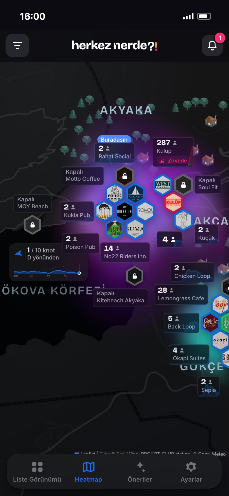

Etiket
Herkes Nerede
İşletmeler için gerçek zamanlı ziyaretçi sayımı ve bilgisi, ziyaretçiler için anlık yoğunluk haritası ve işletmeler hakkında bilgilenme şansı.

01
Bölüm 1
Herkes Nerede App
- aSıcaklık Haritası
01Sıcaklık Haritası
Ziyaretçi İçgörüleri
Akyakaya ilk kez gelen müşteriler
- İşletmeler hakkında yeterli bilgileri yok. Ancak tecrübe ettikten sonra fikir sahibi olabiliyorlar.
- Akyakada sosyal çevreleri yok. Katılmaları gereken etkinliklerden haberdar olamıyorlar.
- Mekanlarından ve instagram sayfalarından haberdar değiller. Etkinlik bazlı bir araştırma yada öngörü yapamıyorlar.
- Mekanların Instagram üzerinden yaptıkları etkinlik duyurularına ulaşamıyorlar.
Spontan, zayıf ve yanlış tercihler, Akyaka'daki tecrübelerini şekillendiriyor. Mekana bir defa gelmesi ve katıldığı etkinliği beğenmemesi mekanın konsepti ile ilgili yanılgı yaratıyor ve tekrar ziyaret etmiyorlar.
01Sıcaklık Haritası
Lokal Müşteri Profili
- Kalabalığın ve communitynin hangi mekanı veya etkinliği tercih edeceği tam olarak bilinemiyor. Küçük arkadaş grupları farklı mekanlara dağılıp o geceki etkinliği kaçırabiliyor.
-
Abi siz bi daneye bakın, kalabalıksa bize haber verin biz de gelelim.
Şeklinde kişiden kişiye etkileşimlerle yürüyen trafik, ziyaretçiler arasında buluşmak konusunda sorun yaratıyor. - 12'de biten etkinlikten sonra ziyaretçilerin nereye gideceği net değil.
- Duyurular çoğu zaman tüm mekanların yarattığı Story kalabalığında kayboluyor. Harita bazlı tek bir ekranda hangi etkinlik başlıyor hangisi bitiyor anlamak ve akılda tutmak çok zor.
01Sıcaklık Haritası
İşletmeci İçgörüleri
Eğlence Mekanı (Kulüp, Pub, Canlı Müzik, Performans)
- Mekanlar ziyaretçi kalabalığı, müşteri yoğunluğu gibi parametreleri ayak üstü birbirleri ile olan iletişimleri üzerinden öğreniyor. Gerçekçi ve anlık bi veri yok. Tüm mekan sahiplerinin birbiriyle ilişkisi güçlü değil.
- Akyaka'daki etkinlikleri ya ezberlenen programlar yada instagram üzerindeki duyurulardan öğrenebiliyorlar. Güçlü etkinlikler çatışıyor, müşteri bölünüyor veya hiç gitmiyor.
- Anlık olarak Akyaka ve Akçapınar arasındaki kalabalığın nerede yoğunlaştığı ölçülemiyor. Herşey varsayımsal.
- Kalabalığın haritası çizilemediği için erken veya geç saatlerdeki etkinlikler ziyaretçi çekemiyor, işletmeler boşta kalan kalabalığı çekmek için strateji üretemiyor. Anlık duyuru yapamıyor.
01Sıcaklık Haritası
İşletmeci İçgörüleri
Restorant, Cafe
İşletmeciler yeterli görünürlüğü sağlayamıyor.
- Konsept, menü ve lokasyonlar ziyaretçilere aktarılamıyor. Boş kalan işletmeler boş kalmaya devam ediyor.
- Eğlence mekanlarının aksine, boş yerin daha önemli olduğu restorantlar boş ve müsait oldukları görüntüsünü oluşturamıyor.
- Menü konsepti ve fiyatları tüketiciye anlatılamıyor. Ziyaretçiler alternatiflerden haberdar olamıyor.
- Mekanın fotoğrafları sadece o mekanın sosyal medyasını takip eden ziyaretçilere hitap ediyor.
Bölüm